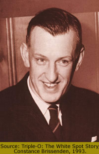

January 31, 1902 - March 27, 1978
Nathaniel Ryal Bailey arrived in Vancouver from St. Paul, Minnesota with his parents at the age of eleven.
Founder of the first drive-in restaurant in Canada in 1928, and developer of the first car-hop tray, Nat Bailey was a tireless supporter of the Marpole Rotary Club, local Chamber of Commerce, little league baseball and the White Spot Junior Pipe Band. Founder of the Canadian Restaurant Association and part owner of the Vancouver Mounties baseball team, his promotion of baseball was recognized by the renaming of Capilano Stadium as Nat Bailey Stadium in 1978.
Mount Lebanon Lodge No. 72, Vancouver
- Founding member: 1954/11/17
Mosaic Lodge No. 162, Vancouver
Source: Grand Lodge of BC & Yukon records.